Uch ish o'rni uchun: Farhod aka (shifokor va klinika egasi), Qabulxona (registrator) va Kassa (kassir). Bosqichma-bosqich, rasmlar bilan: nima bosiladi va nima chiqadi. Har bo'lim video-darsning bir qismi bo'lishi ham mumkin.
Manzil: itopmed.itoppos.uz/login · Kirish faqat login va parol bilan. Ma'lumotlar serverda saqlanadi, har kuni zaxira nusxa olinadi.
Versiya: 2026-yil noyabr · Rasmlardagi bemorlar to'qima (namuna), haqiqiy odamlar emas.
Mundarija
0. Video tayyorlash bo'yicha maslahat3
1. Dastur qanday ishlaydi: kim nima qiladi3
2. Kirish, til, ekran, chiqish4
3. Bosh sahifa5
4. Birinchi sozlash (klinika egasi)6
5. Qabulxona: bemorni yozish11
6. Kassa: to'lov, chek, qarz, smena17
7. Shifokor: qabul, yozuv, tashxis, retsept21
8. UTT va EXO: shifokorning o'z blankalari29
9. Hujjatlarni chop etish31
10. Hisobotlar va nazorat (egasi)32
11. Bemorlar, bemor kartasi va Excel33
12. Sinov bemorlarini tozalash35
13. Har kungi qisqa tartib36
14. Muammolar va yechimlar36
15. Barcha bo'limlar birma-bir38
16. Video ssenariysi (jadval)53
0. Video tayyorlash bo'yicha maslahat
Videoni 14 ta qisqa qismga bo'ling (oxirgi sahifadagi jadval). Har biri 1–4 daqiqa — shifokor keyin kerakli joyini qayta ko'ra oladi.
Yozib olishdan oldin dasturda 2–3 ta namuna bemor kiriting (masalan "Aliyev Botir, 1962"). Haqiqiy bemorni ko'rsatmang. Video tugagach ularni 11-bo'limdagi tugma bilan o'chirasiz.
Uch oyna oching: Qabulxona, Kassa va shifokor hisoblari (masalan Chrome, Edge va "Inkognito" oynasi). Shunda bemor qabulxonadan kassaga va shifokorga qanday "o'tishi" ko'rinadi.
Brauzer masshtabini 110–125% qiling (Ctrl + +) — videoda yozuvlar yaxshi o'qiladi.
Videoda: har qism boshida "endi … ni ko'ramiz" deb ayting, oxirida qisqa xulosa qiling: "Demak, registrator 4 ta qadamni to'ldiradi va talonni beradi".
1. Dastur qanday ishlaydi: kim nima qiladi
QabulxonaBemorni yozadi, xizmatlarni belgilaydi, bosim va vaznni o'lchaydi
Hamma bo'lim: sozlamalar, xodimlar, narxlar, shablonlar, qabul va tibbiy yozuvlar, hisobotlar, nazorat markazi. Pul qabul qilmaydi — u Kassaning ishi.
Registrator
Qabulxona
Qabulxona, bemorlar ro'yxati, navbat, qabulga yozish. Xizmatlarni belgilaydi (hisob Kassaga tushadi), bosim, vazn, bo'y va pulsni yozadi, talon chop etadi. Pul olmaydi, tibbiy yozuvlarni ko'rmaydi.
Kassir
Kassa
"Kassa: to'lov" — bemorning hamma to'lanmagan xizmatlari bir ro'yxatda; to'lov (naqd, karta, Payme, Click, Uzum, o'tkazma), chek, qarz, kassa smenasi. Tibbiy yozuvlarni ko'rmaydi.
Har bir xodim o'z logini bilan kiradi. Kim nima qilgani avtomatik yozib boriladi (audit jurnali).
2. Kirish, til, ekran, chiqish
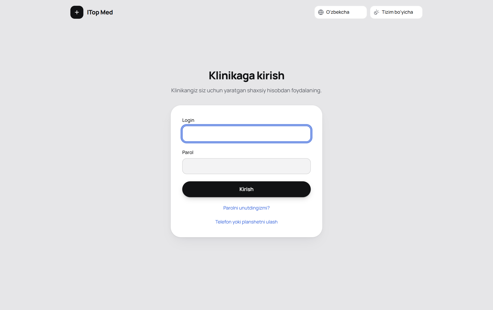
Kirish sahifasi: login va parol
Chrome yoki Edge'da itopmed.itoppos.uz/login ni oching.
Login va parolni yozing → Kirish. Klinika avtomatik ochiladi.
Brauzer menyusidan "Ilovani o'rnatish" ni tanlasangiz, ish stolida ITop Med belgisi paydo bo'ladi — keyingi safar shu belgi bilan ochasiz.
Chap ustundagi tugmalar: ☀ / ☾ — yorug' yoki qorong'i ekran; UZ — til (o'zbekcha lotin/kirill, ruscha, inglizcha; har kim o'zi tanlaydi); pastda 🔒 — ekranni qulflash (kompyuterdan ketayotganda) va ⇥ — chiqish.
Parolni unutsa: registratorga yangi parolni Farhod aka beradi (4-bo'lim, Xodimlar). Parol kamida 8 belgi.
Chap ustunda Klinika (bino belgisi) → yuqorida Xodimlar → Xodim qo'shish.
Qabulxona uchun: ism-familiya, rol — Registrator, login (masalan qabul) va parol → Qo'shish.
Kassa uchun: rol — Kassir, login (masalan kassa) va parol.
Login va parolni qog'ozga yozib xodimga bering. Har kim faqat o'z logini bilan kiradi.
Parolni unutsa: Xodimlar → xodimni oching → Yangi parol berish. Ishdan ketgan xodim uchun Kirishni to'xtatish — u endi kira olmaydi, tarix saqlanadi.
Registrator roli: xizmatlar va o'lchovlar
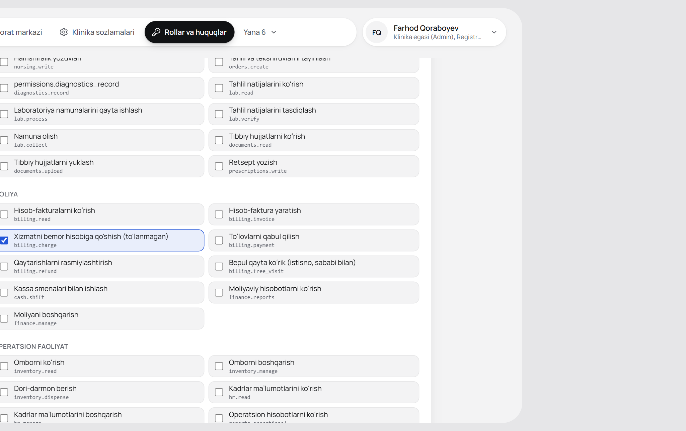
Rollar va huquqlar → Registrator: "Xizmatlarni hisobga qo'shish" va "Hayotiy ko'rsatkichlarni kiritish" belgilangan
Farhod MedServis'da registratorga ikkita qo'shimcha huquq berilgan: xizmatlarni hisobga qo'shish (belgilagan xizmatlari to'lanmagan holda Kassaga tushadi) va o'lchovlar (bosim, vazn, bo'y, puls — shifokor bemor kirmasdan oldin ko'radi). Pul olish va tibbiy yozuvlarni o'qish registratorga berilmaydi.
4.3. Xizmatlar va narxlar
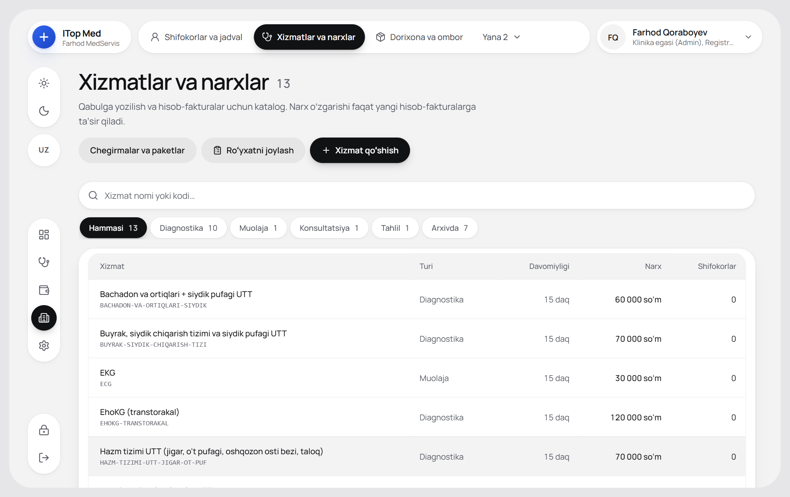
Xizmatlar va narxlar — Farhod akaning narxnomasi (13 ta xizmat)
Narxni o'zgartirish: xizmatni oching → yangi narx → Saqlash. Yangi narx shundan keyingi bemorlarga qo'llanadi; eski to'lovlar o'zgarmaydi. Kerak bo'lmagan xizmatni arxivlang — qabulxonada ko'rinmaydi.
Videoda: bitta narxni o'zgartirib, qabulxonada yangi narx chiqqanini ko'rsating.
4.4. Shablonlar — shifokorning o'z blankalari
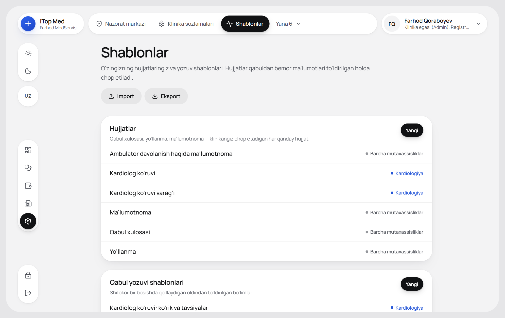
Shablonlar: hujjatlar, qabul yozuvi shablonlari, diagnostika (UTT/EXO) shablonlari
Turi
Nima uchun
Farhod akaning shablonlari
Hujjatlar
Chop etiladigan varaq; bemor ma'lumotlari o'zi qo'yiladi
Kardiolog ko'ruvi varag'i, Ambulator davolanish haqida ma'lumotnoma, Qabul xulosasi, Yo'llanma
Qabul yozuvi
Ko'rik bayonnomasini bir bosishda to'ldiradi
Kardiolog ko'ruvi: ko'rik va tavsiyalar (sayr, ovqatlanish, suv)
Diagnostika
UTT / EXO bayonnomasi: maydonlar, me'yorlar, xulosa
12 ta: homiladorlik I va II–III trimestr, qorin bo'shlig'i (ayollar / erkaklar), hazm tizimi, oshqozon, buyraklar + prostata, bachadon va ortiqlari, qalqonsimon bez, yorg'oq, yuza a'zolar, exokardiografiya
Maydonlar har qatorda bittadan:kalit | Nomi | birlik | me'yor | odatiy matn. Masalan: rlLength | O'ng bo'lak uzunligi | sm | 4-6 |. Me'yor yozilgan maydonga son kiritilsa, me'yordan tashqari bo'lsa qizil bo'lib belgilanadi. Hisobot matnida maydon {{rlLength}} ko'rinishida turadi.
Me'yorlar faqat Farhod akaning Word blankalaridan olingan. O'zgartirsangiz, faqat keyingi bayonnomalarga ta'sir qiladi — eski bayonnomalar o'zgarmaydi.
4.5. Shifokor va ish jadvali
Shifokorlar va jadval
Standart jadval: dushanba–juma, 9:00–18:00. Shanba yoki yakshanba ishlasangiz — qo'shing. Jadval faqat oldindan yozilish (Qabulga yozish) uchun kerak; qabulxonadan "hozir kelgan" bemor har doim navbatga qo'shiladi.
Videoda: 4-bo'limni egasi nomidan bir marta ko'rsating (5–6 daqiqa). Shifokor uchun bu qism "ma'lumot uchun".
5. Qabulxona: bemorni yozish
Registrator Butun ish bitta sahifada: Qabulxona. Tepada bugungi bemorlar, navbatdagilar, bugun to'langan pul va to'lanmagan summa.
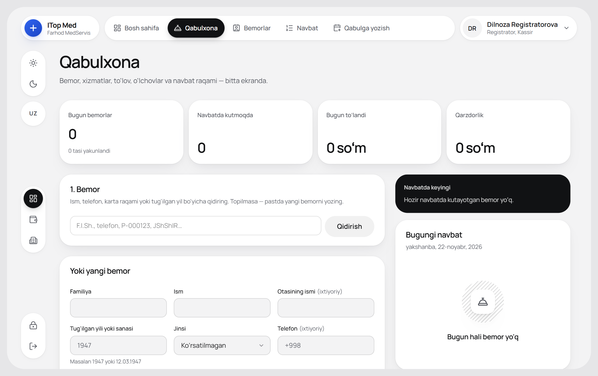
Qabulxona: 1. Bemor — qidirish yoki yangi bemor
5.1. Bemorni navbatga qo'shish — 4 qadam
1
Bemor. Avval qidiring: familiya, telefon, karta raqami (P-000123) yoki tug'ilgan yil. Topilsa — tanlang. Topilmasa — "Yoki yangi bemor": familiya, ism, tug'ilgan yili (1962 yoki 14.03.1962), jinsi, telefon, manzil, kim yubordi.
2
Xizmatlar. Bemor nima uchun kelgan bo'lsa — belgilang (Kardiolog ko'ruvi, EKG, EhoKG, UTT…). Jami summa o'zi hisoblanadi. Registrator pul olmaydi: xizmatlar hisobi Kassaga tushadi.
3
O'lchovlar: bo'y, vazn, bosim, puls. Shifokor ularni o'z ro'yxatida bemor kirmasdan oldin ko'radi.
4
Shifokor → Navbatga qo'shish. Navbat raqami chiqadi.
Shunday bemor allaqachon bo'lsa, dastur ogohlantiradi — ikki marta yozilib qolmaydi. Ishonchingiz komil bo'lsa "Bu yangi bemor" belgisini qo'ying.
5.2. Navbat raqami va talon
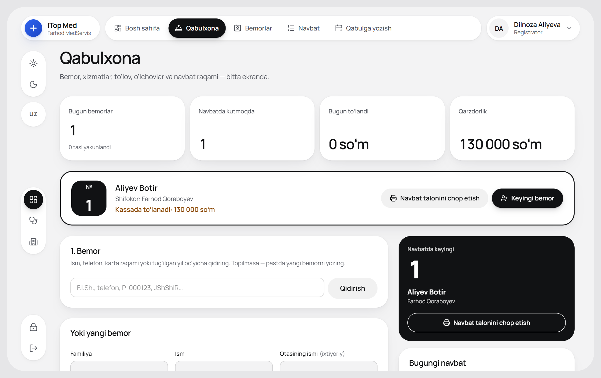
Bemor navbatga qo'shildi: № 1 va "Kassada to'lanadi: 130 000 so'm". "Navbat talonini chop etish" → "Keyingi bemor"
Bemorga talonni bering va Kassaga yuboring: "Kassada 130 000 so'm to'lab, keyin kabinetga kiring".
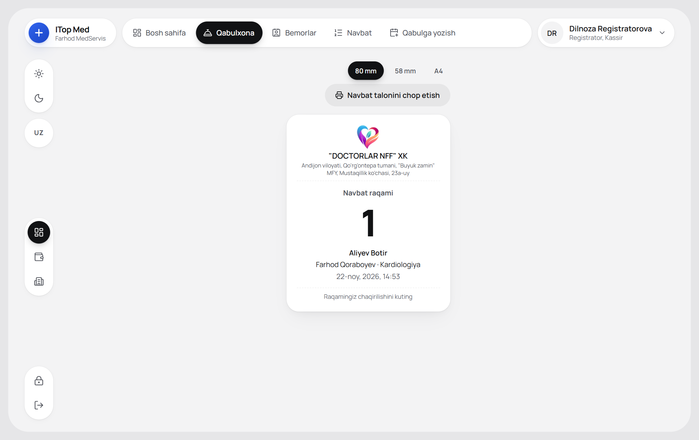
Navbat taloni (80 mm, 58 mm yoki A4) — logotip, raqam, shifokor, vaqt. Narx va tashxis yozilmaydi.
Printer: chop etish oynasida talon va chek uchun chek printerini, shifokor hujjatlari uchun A4 printerni tanlang.
Videoda: bitta yangi bemorni boshidan oxirigacha yozing, talonni chop eting, Kassa oynasida u darhol paydo bo'lganini ko'rsating. 3 daqiqa.
5.3. Bugungi navbat
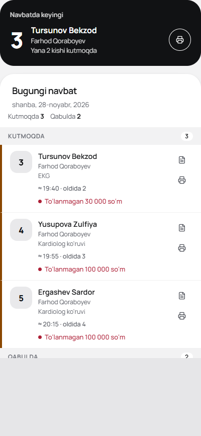
Navbatda keyingi va bugungi navbat guruhlar bo'yicha
O'ng tomonda: tepada Navbatda keyingi (raqam, bemor, shifokor, talon tugmasi), ostida bugungi navbat guruhlar bo'yicha:
Kutmoqda — navbat raqami tartibida, taxminiy kirish vaqti bilan;
Qabulda — shifokor chaqirgan yoki ko'rikda;
Yozilgan, hali kelmagan — oldindan yozilganlar (vaqti bilan);
Yakunlangan; Kelmagan / bekor — yig'ib qo'yilgan.
Har qatorda: katta navbat raqami, bemor, shifokor va xona, xizmatlar, to'lov holati (To'langan yashil yoki To'lanmagan 130 000 qizil), hujjatlar va talon tugmalari. Qabul yakunlangach va to'lov qilingach, hujjat tugmasidan bemorning qog'ozlarini chop etib berasiz.
Shunday bemor allaqachon bo'lsa, dastur ogohlantiradi — avval qidiring, bir bemorni ikki marta yozmang.
5.4. Qayta kelgan bemor — tez va xatosiz
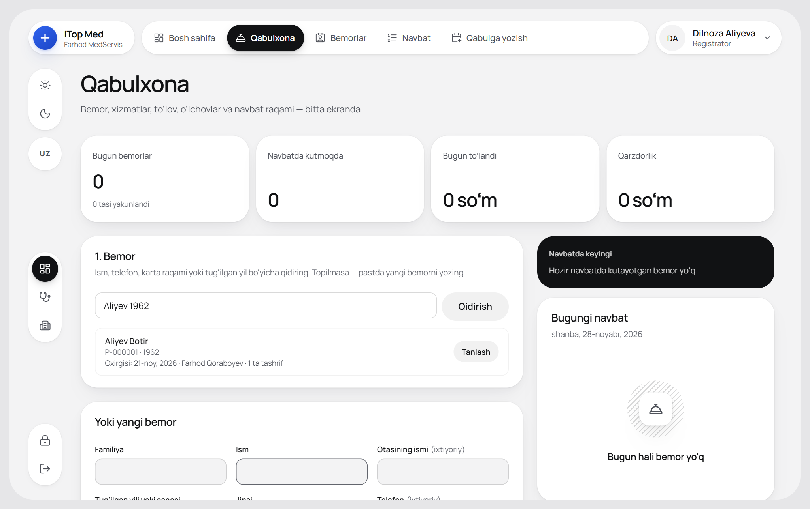
Qidiruv: "Aliyev 1962" — familiya + tug'ilgan yil (adashlar bir-biridan ajraladi)
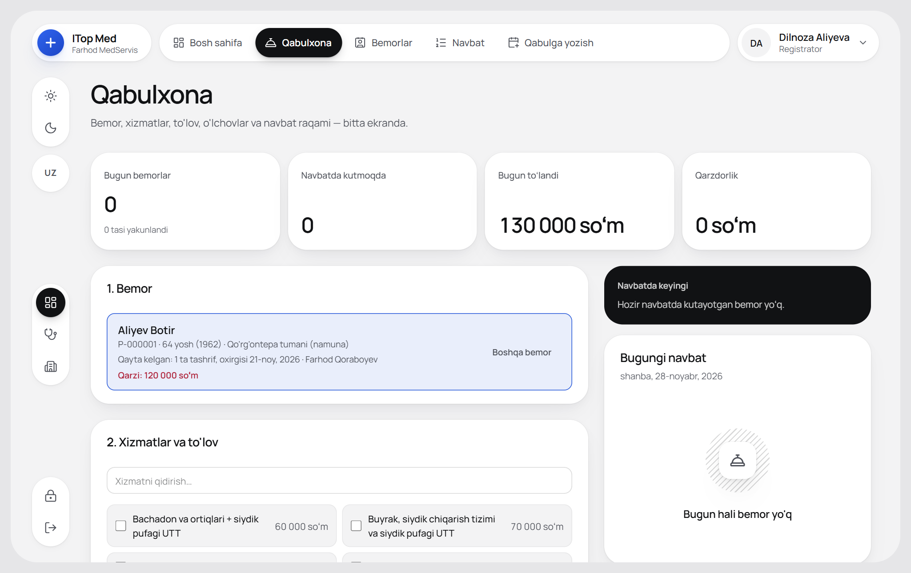
Tanlangan bemor: yoshi, "Qayta kelgan: 1 ta tashrif, oxirgisi …", eski qarzi
Har doim avval qidiring. Qidiruvga yozish mumkin: familiya yoki ism, telefon, karta raqami (P-000123), tug'ilgan yil (1962), familiya + yil (Aliyev 1962), to'liq sana (14.03.1962), JShShIR.
Natijada har bir bemorning yoshi, telefoni, oxirgi tashrifi va nechta tashrifi ko'rinadi — to'g'ri odamni tanlash oson.
Tanlash → bemor ma'lumoti o'zi to'ladi: "Qayta kelgan: N ta tashrif, oxirgisi sana · shifokor" yoki "Birinchi marta kelmoqda". Eski qarzi bo'lsa — qizil yozuv.
Bemor bugun allaqachon navbatda bo'lsa, dastur ogohlantiradi — ikkinchi marta qo'shmang.
Xizmatlar, o'lchovlar → Navbatga qo'shish. Yangi karta ochilmaydi — butun tarix bitta kartada qoladi.
Bemorlar sahifasidan ham boshlash mumkin: bemor qatoridagi Navbatga tugmasi Qabulxonani shu bemor bilan ochadi (11-bo'lim).
5.5. Navbat sahifasi va telefon
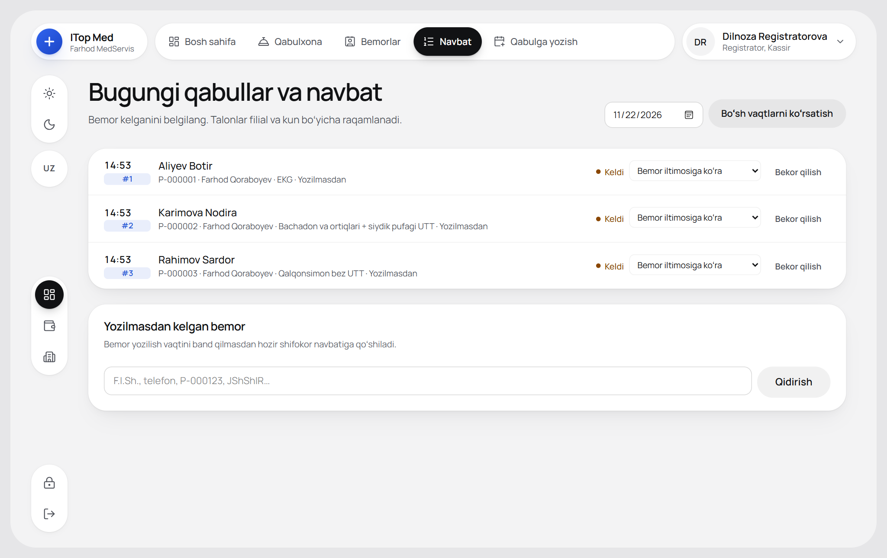
Navbat: bugungi qabullar va navbatsiz kelgan bemorlar; "Bo'sh vaqtlarni ko'rsatish" — oldindan yozish uchun
Qabulga yozish — bemorni boshqa kunga oldindan yozish (shifokor jadvalidagi bo'sh vaqtlar ko'rsatiladi).
Telefon va planshetda ham ishlaydi: menyu pastda chiqadi. Registrator telefondan ham bemor qo'sha oladi.
Videoda: telefonda saytni ochib, pastki menyuni ko'rsating. 1 daqiqa.
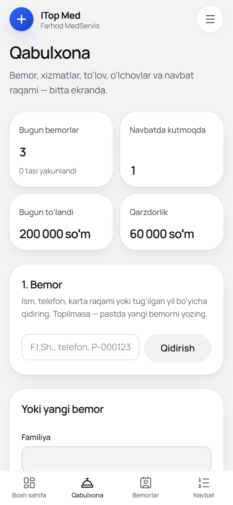
Telefonda Qabulxona
6. Kassa: to'lov, chek, qarz, smena
Kassir Kassa ikki sahifada ishlaydi: Kassa: to'lov (bemorlar pul to'laydi) va Kassa (smena: kun boshida ochiladi, kun oxirida yopiladi).
6.1. Kun boshida — smenani ochish
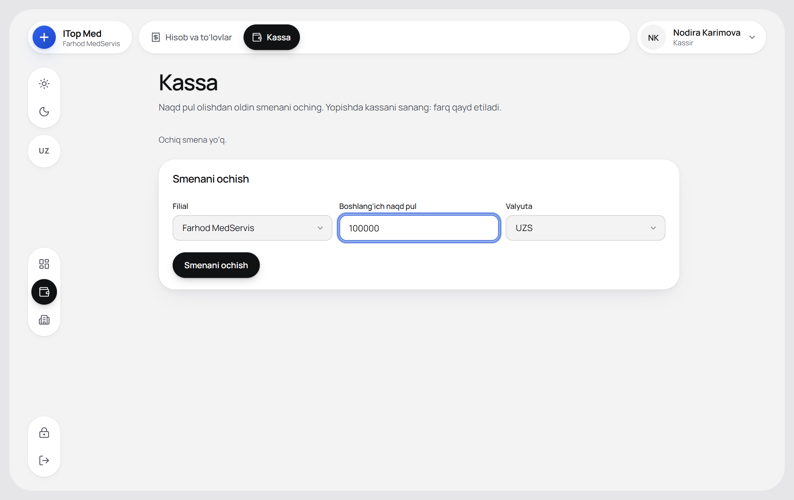
Kassa → boshlang'ich naqd pul → Smenani ochish
Kassadagi naqd pulni yozing (masalan 100 000) → Smenani ochish. Naqd to'lovlar shu smenaga yoziladi.
6.2. "Kassa: to'lov" — to'lashi kerak bo'lganlar
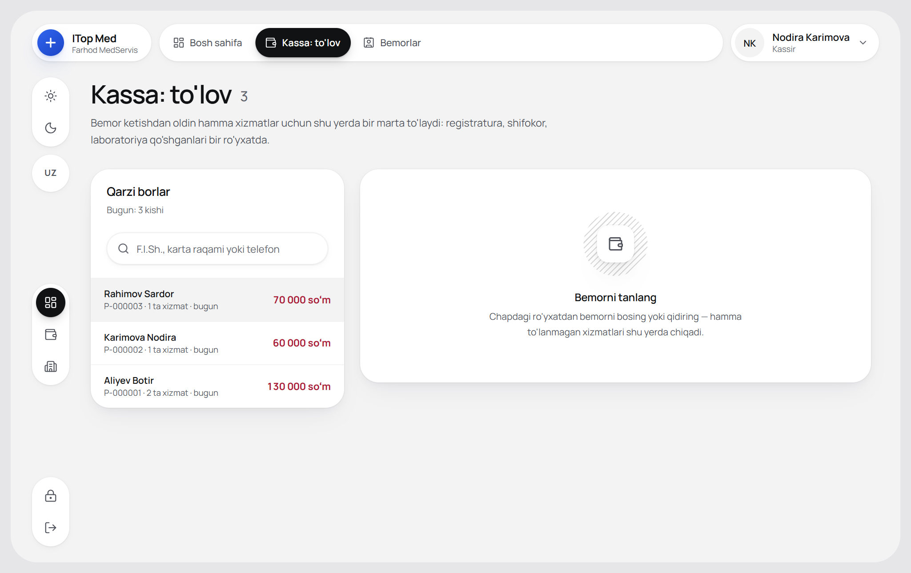
Chapda: to'lanmagan xizmati bor bemorlar va summasi. Qidiruv: F.I.Sh., karta raqami yoki telefon
Qabulxona yozgan, shifokor yoki laboratoriya qo'shgan hamma xizmat shu ro'yxatga tushadi. Bemor bir marta to'laydi.
6.3. To'lovni qabul qilish
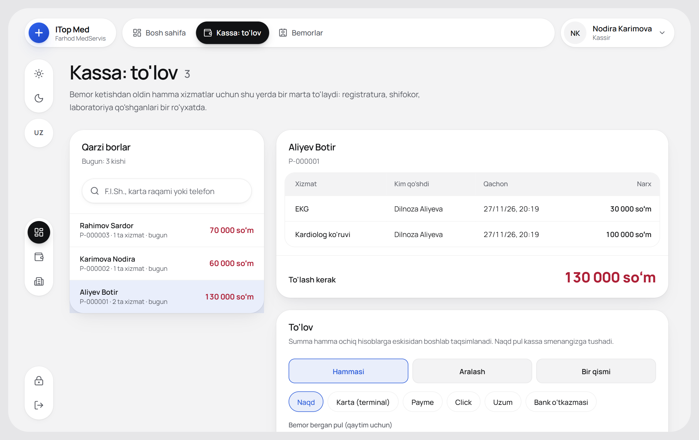
Bemor tanlandi: xizmatlar, kim qo'shgani, "To'lash kerak"; pastda to'lov
Chapdagi ro'yxatdan bemorni bosing — uning xizmatlari, kim qo'shgani va jami summa chiqadi.
To'lov turi: Hammasi (butun summa), Aralash (masalan bir qismi naqd, qolgani karta) yoki Bir qismi (qolgani qarz bo'lib turadi).
Usul: Naqd, Karta (terminal), Payme, Click, Uzum, bank o'tkazmasi. Naqdda "bemor bergan pul" yozilsa, qaytim hisoblanadi.
To'lash → to'lov yoziladi, chekni chop etish mumkin.
Chek fiskal emas (soliq kassasi cheki emas). Payme, Click, Uzum hozircha qo'lda qayd etiladi — tranzaksiya raqamini yozib qo'yish mumkin.
6.4. Qarz va keyin to'lash
Bemor puli yetmasa — Bir qismi bilan bor summani oling. Qolgani shu ro'yxatda qizil summa bilan turadi va shifokor ro'yxatida "Qarz" bo'lib ko'rinadi. Bemor keyin kelganda: ro'yxatdan (yoki qidiruvdan) toping → to'lang.
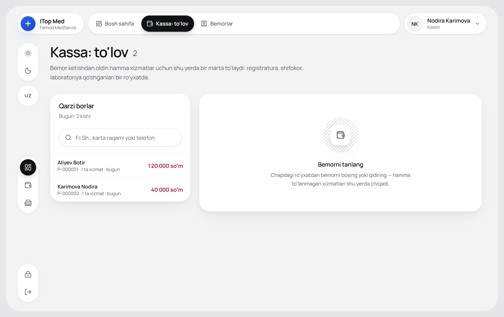
Kun oxiri: shifokor qo'shgan EhoKG (120 000) va qisman to'langan bemorning qolgani (40 000)
6.5. Kun oxirida — smenani yopish
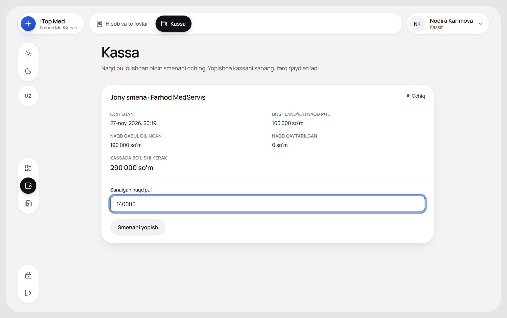
Kassa: "Kassada bo'lishi kerak" summasi va sanalgan naqd pul
Kassadagi naqd pulni sanang → Sanalgan naqd pulga yozing → Smenani yopish. Kamomad yoki ortiqcha bo'lsa, dastur qayd etadi va Farhod aka "Nazorat markazi"da ko'radi. Karta, Payme, Click naqd pulga qo'shilmaydi.
Videoda: smenani ochish → bitta bemordan to'liq naqd → bittasidan aralash → chek → kun oxirida smenani yopish. 3–4 daqiqa.
7. Shifokor: qabul, yozuv, tashxis, retsept
Shifokor Chap ustunda stetoskop belgisi → Bugungi bemorlarim.
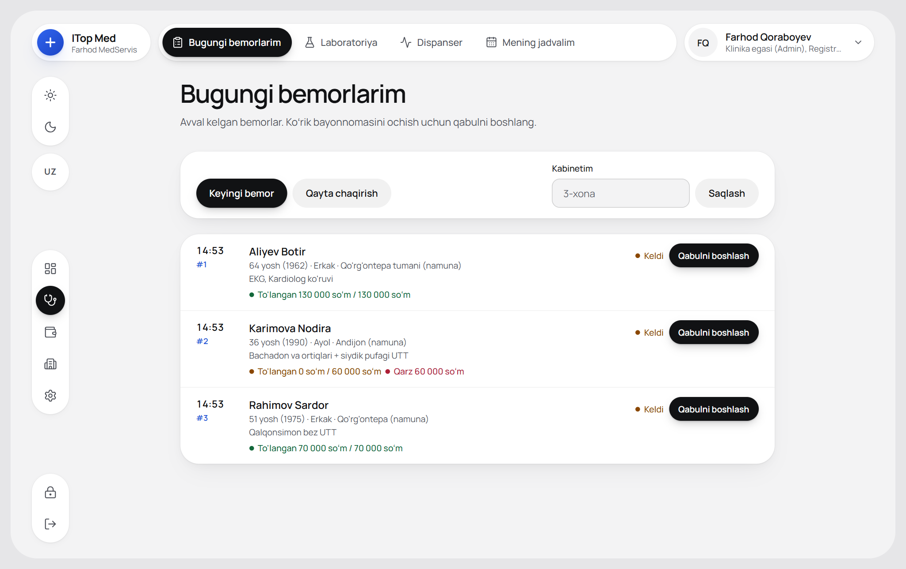
Bugungi bemorlarim: navbat raqami, yoshi, xizmatlari, qabulxonada o'lchangan bosim, puls, vazn, bo'y va to'lov holati — bemor kirmasdan oldin
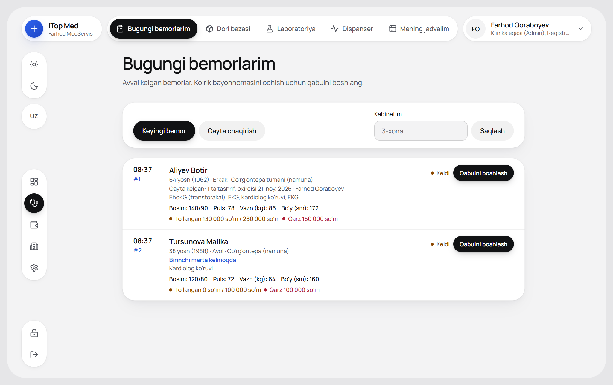
"Qayta kelgan: 1 ta tashrif, oxirgisi 21-noy" va "Birinchi marta kelmoqda" — shifokor bemor kirmasdan biladi
Har bir bemor tagida: Birinchi marta kelmoqda yoki Qayta kelgan: N ta tashrif, oxirgisi sana · shifokor. Qayta kelganda Tibbiy karta va ko'rikda Oldingi ko'rikdan nusxalash ishni tezlashtiradi.
Keyingi bemor — navbatdagi bemorni chaqiradi (kutish zalidagi ekranda raqam chiqadi va ovoz bilan aytiladi, agar ekran ulangan bo'lsa). Qayta chaqirish — yana bir bor.
Kabinetim — xona raqami (masalan "3-xona"), chaqiruvda aytiladi.
Qabulni boshlash — ko'rik bayonnomasi ochiladi.
Videoda: qabulxona oynasida yozilgan bemor shifokor oynasida darhol paydo bo'lishini ko'rsating.
7.0. Tezkor ish: bemor to'lagan xizmat — bitta tugma
Har bir bemor tagida u to'lagan xizmatlar tugma bo'lib turadi: «Kardiolog ko'ruvi», «EhoKG (transtorakal)», «Qalqonsimon bez UTT»… Ortiqcha narsa yo'q — kerakli blanka bir bosishda ochiladi.
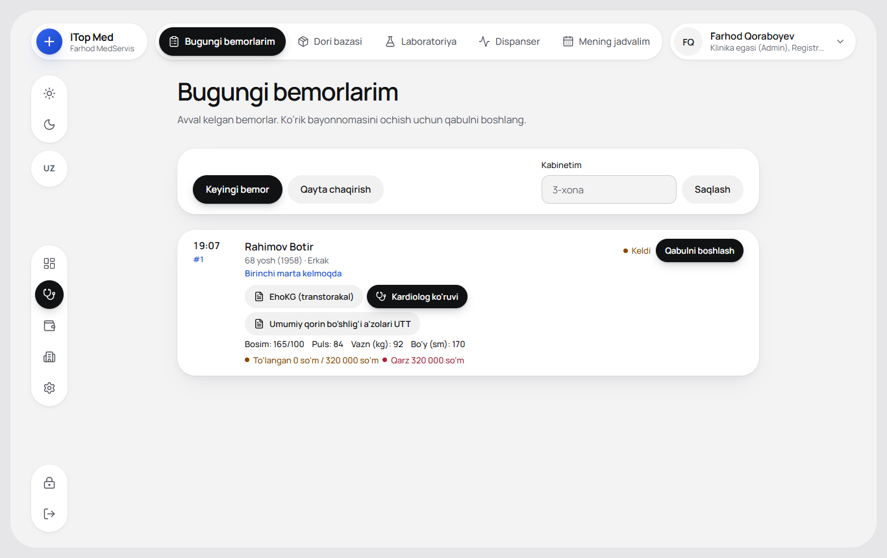
Bemor to'lagan uchta xizmat: EhoKG, Kardiolog ko'ruvi, Umumiy qorin UTT — har biri bitta tugma
EhoKG (yoki istalgan UTT) tugmasini bosing → shu xizmatning o'z blankasi tayyor holda ochiladi (EXO blankasi, qalqonsimon bez blankasi…). «Umumiy qorin UTT»da bemorning jinsiga qarab erkak yoki ayol blankasi ochiladi.
Blankani to'ldiring (Me'yorni to'ldirish odatiy qiymatlarni qo'yadi) → Tayyor.
Natija saqlanadi, qabulxonada chop etishga tayyor bo'ladi va navbatga qaytasiz — tugmada ✓ chiqadi.
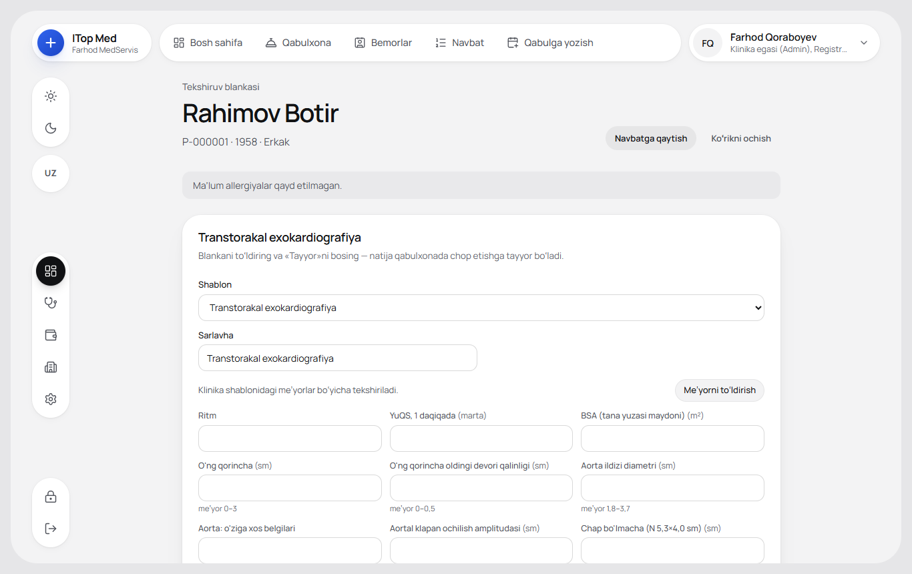
EhoKG bosildi: EXO blankasi tayyor ochildi
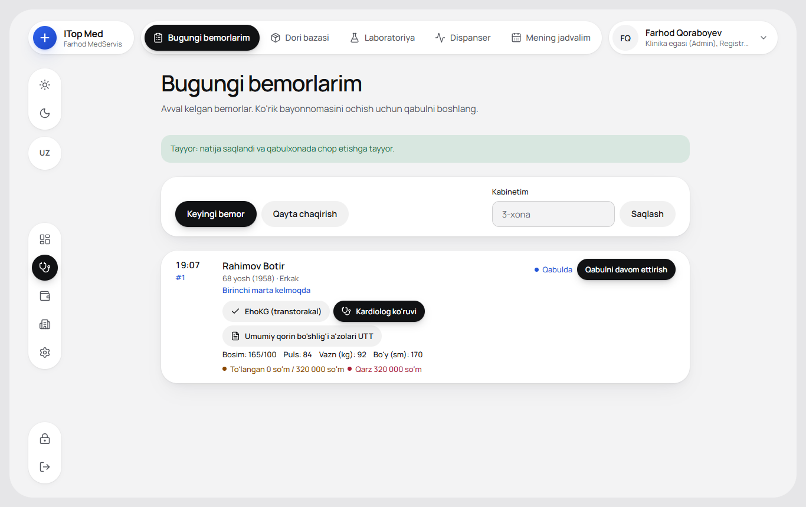
«Tayyor»dan keyin: EhoKG ✓, natija qabulxonada chop etishga tayyor
7.0.1. Ko'rik: avval ko'rik varaqasi
Kardiolog ko'ruvi tugmasi ko'rikni ochadi. Birinchi bo'lib Ko'rik varaqasi chiqadi: bemorning ismi, tashxis va davolash rejasi — bitta ekranda. Shikoyat va anamnez endi alohida va ixtiyoriy: kerak bo'lgan bemorda to'ldiriladi.
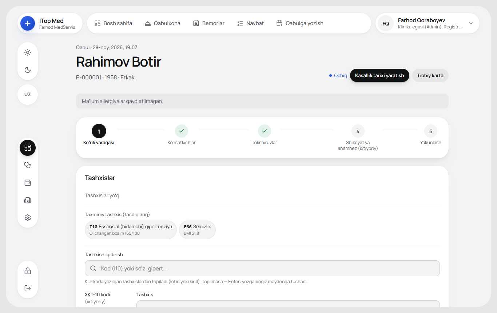
Ko'rik varaqasi: tashxis va davolash; burchakda «Kasallik tarixi yaratish»
7.0.2. «Kasallik tarixi yaratish»
Burchakdagi Kasallik tarixi yaratish tugmasi → savollarga javob belgilanadi:
Shikoyatlar — tugmachalar (zo'riqishda ko'krakda og'riq, hansirash, yurak urib ketishi, bosh og'rig'i, shishlar…) va qachondan beri.
Arterial bosim — ko'tariladimi, necha yildan beri, eng yuqori qiymati; doimiy dorilari.
Xavf omillari — qandli diabet, chekish, infarkt, insult, irsiyat.
Matn o'zi yoziladi (shikoyatlar va anamnez) — xohlasangiz o'sha yerda tahrirlaysiz.
Taxminiy tashxis (MKB-10) taklif qilinadi: javoblar va bugungi bosim, vaznga qarab. Faqat siz belgilaganingiz yoziladi; birinchisi — asosiy tashxis.
Saqlash → ko'rik varaqasiga qaytasiz: tashxis tayyor, davolash rejasini yozasiz.
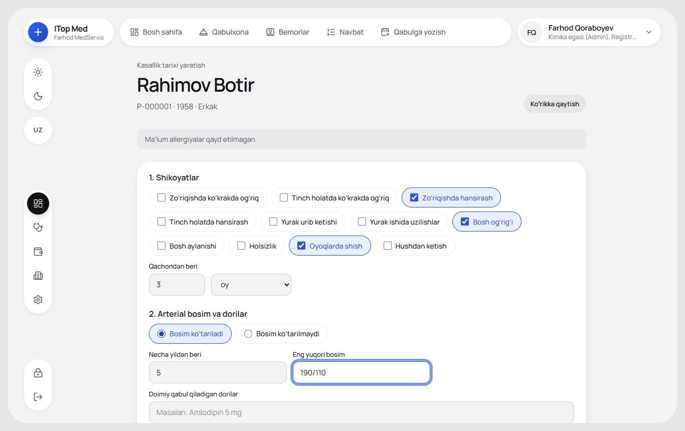
Kasallik tarixi yaratish: shikoyatlar, bosim, xavf omillari, matn va taxminiy tashxis
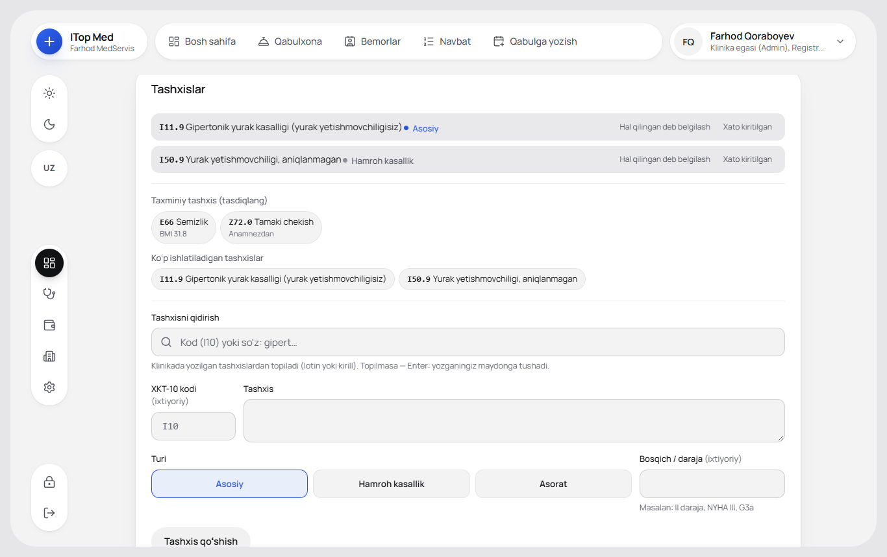
Saqlangandan keyin: tashxislar ko'rik varaqasida
7.0.3. Davolash rejasi: dori tez yoziladi
Dori nomining birinchi harflarini yozing: bis → Bisoprolol (2,5 / 5 / 10 mg) va Konkor chiqadi. Tanlang — doza va qabul tartibi o'zi to'ladi, o'zgartirish mumkin → Retsept qo'shish.
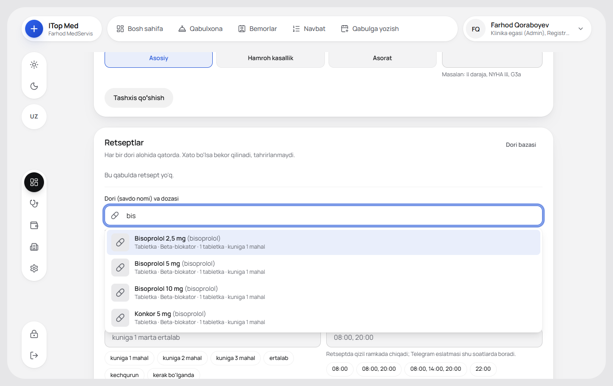
«bis» yozildi: Bisoprolol va Konkor
Dastlab 40 ta kardiologik dori qo'shilgan (beta-blokatorlar, AAF ingibitorlari, sartanlar, diuretiklar, statinlar, antiagregantlar, antikoagulyantlar…). Yangi dorini Dori bazasi bo'limida qo'shasiz yoki retsept yozayotganda «Dori bazasiga saqlash» belgisini qoldirasiz — keyingi safar u ham qidiruvda chiqadi.
Videoda: navbatda EhoKG → blanka → Tayyor ✓; Kardiolog ko'ruvi → Kasallik tarixi yaratish → tashxis → «bis» bilan Bisoprolol. Bemorga 5–6 daqiqa.
Qadamlar orasida tepadagi raqamlarni bosib o'tasiz; tartib majburiy emas. Bajarilgan qadamda belgi chiqadi.
Shablondan to'ldirish → "Kardiolog ko'ruvi: ko'rik va tavsiyalar" → Qo'llash. Faqat bo'sh bo'limlar to'ldiriladi — siz yozgan matn o'zgarmaydi.
Tezkor tanlash — shikoyat, yurak va o'pka auskultatsiyasi, shishlar: bir bosishda matnga qo'shiladi. Oldingi ko'rikdan nusxalash — qayta kelgan bemor uchun.
Shikoyatlar, anamnez, obyektiv ko'rik, xulosa, reja bo'limlarini to'ldiring.
Imzolash. Imzolangan bayonnomani o'zgartirib bo'lmaydi — faqat sababini ko'rsatib qo'shimcha kiritiladi (bu qonuniy talab).
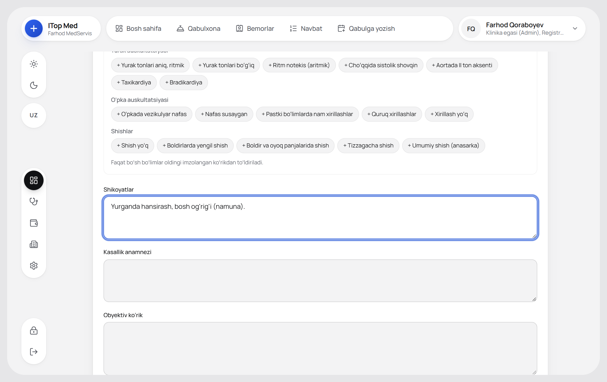
Bo'limlarni yozish
7.2. Tashxis va retsept
Tashxis: MKB-10 kodi (ixtiyoriy, masalan I11.9) va matn; turi — asosiy, hamroh yoki asorat. Kardiolog varag'ida "Tashxis / Hamroh / Asorati" qatorlariga o'zi tushadi.
Retsept: dori va dozasi (masalan "Bisoprolol 5 mg"), xalqaro nomi, bir martalik doza (1/2, 1/4 tabletka rasm bilan chiqadi), qabul tartibi, soatlari (08:00, 20:00), davomiyligi.
Allergiyasi bor doriga retsept yozilsa — dastur ogohlantiradi.
Xato retsept bekor qilinadi (o'chirilmaydi).
Retsept sxemasi — tez-tez yoziladigan dorilar to'plami bir bosishda qo'shiladi (Shablonlar → Retsept sxemalari).
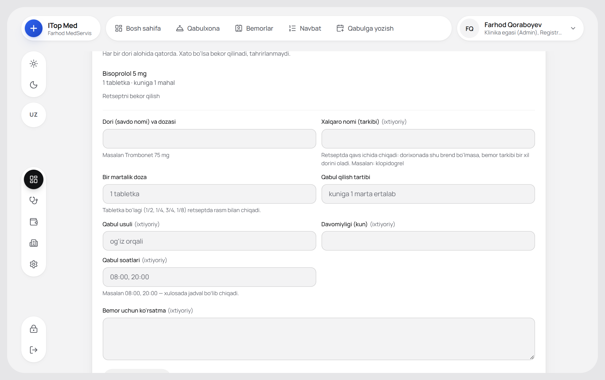
Retseptlar: qo'shilgan dori va yangi retsept formasi
7.3. Qabul vaqtida qo'shimcha xizmat (EhoKG, EKG, UTT)
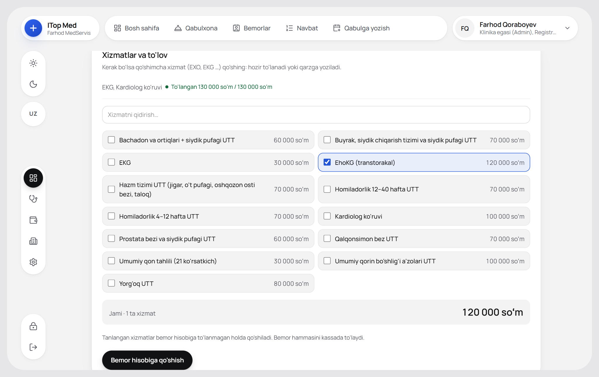
"Xizmatlar va to'lov": EhoKG belgilandi → Qo'shish. Hisob Kassaga tushadi.
Ko'rik paytida qo'shimcha tekshiruv kerak bo'lsa — belgilang va qo'shing. Shifokor pul olmaydi: xizmat bemorning hisobiga tushadi, bemor ketishdan oldin Kassada to'laydi (6-bo'lim).
Videoda: shablonni qo'llang → bitta shikoyatni tezkor tanlashdan qo'shing → imzolang → tashxis, retsept va EhoKG qo'shing. 4–5 daqiqa.
8. UTT va EXO: shifokorning o'z blankalari
Farhod akaning Word blankalari dasturga kiritilgan. Qabulda Tekshiruvlar qadami → Natija qo'shish:
Shablonni tanlang (masalan "UTT: qalqonsimon bez"). Ro'yxatning boshida "Shablonsiz" — EKG kabi oddiy maydonlar uchun.
Me'yorni to'ldirish — "aniq, tekis", "bir xil", "kengaymagan" kabi odatiy matnlar bir bosishda qo'yiladi.
O'lchamlarni yozing (vergul yoki nuqta bilan: 1,7). Me'yordan tashqari son qizil bo'ladi va pastda ro'yxati chiqadi.
Xulosani yozing (tavsiya qatori tayyor turadi) → Saqlash.
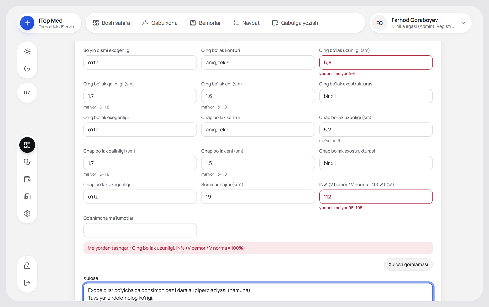
Qalqonsimon bez: o'ng bo'lak uzunligi 6,8 sm va IN% 112 — me'yordan yuqori, qizil
Bo'sh qoldirilgan maydonli qator bosma varaqda chiqmaydi. EKG uchun shablonsiz oddiy maydonlar (ritm, YuQS, PQ, QRS, QT) bor. Natijaga rasm yoki PDF (apparat ekrani) biriktirish mumkin.
8.1. Bosma UTT bayonnomasi
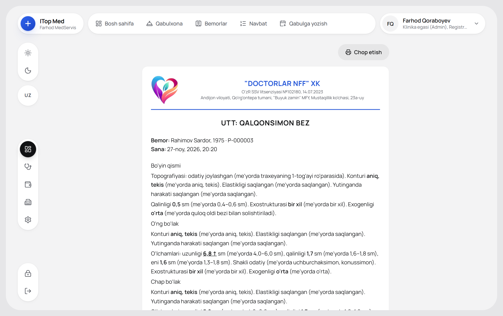
Chop etish: blank, bemor, sana, Word blankasidagi matn; me'yordan tashqari qiymatlar qalin va ↑ / ↓ bilan
Videoda: qalqonsimon bez yoki qorin bo'shlig'i UTT sini to'liq ko'rsating: shablon → me'yorni to'ldirish → bitta qiymatni me'yordan tashqari yozish → saqlash → chop etish. 3–4 daqiqa.
9. Hujjatlarni chop etish
Qabulning Yakunlash qadamidagi Hujjatlar tugmalaridan biri → bemor, sana, tashxis, retseptlar va shifokor ma'lumotlari o'zi qo'yiladi → Chop etish. Hujjatlarda narx yozilmaydi.
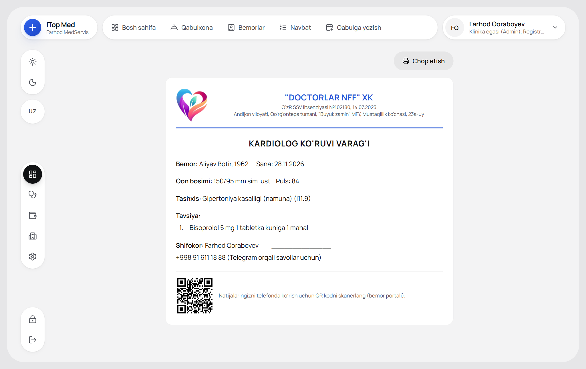
Kardiolog ko'ruvi varag'i — pastida "+998 91 611 18 88 (Telegram orqali savollar uchun)"
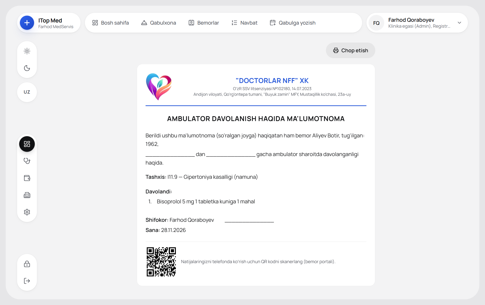
Ambulator davolanish haqida ma'lumotnoma — sanalarni qo'lda yozasiz
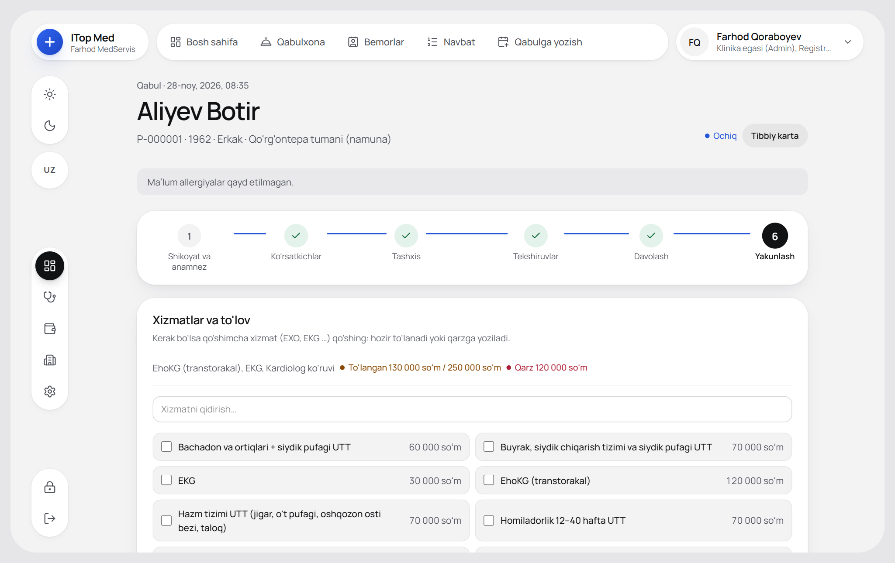
Yakunlash qadami: hujjatlar, keyingi tashrif, "Qabulni yakunlash"
Qabulni yakunlash: hamma ish tugagach — Qabulni yakunlash. Bemor ro'yxatda "yakunlandi" bo'ladi, keyingi bemorni chaqirasiz. Qabulxona yakuniy hujjatni to'lov qilingandan keyin chop etib beradi.
Varaqdagi QR kod — bemor o'z natijalarini telefonda ko'rishi uchun (bemor portali). Eski "Kardiolog ko'ruvi" hujjati kerak bo'lmasa, Shablonlar sahifasida arxivlang.
Videoda: kardiolog varag'ini chop etish oynasigacha ko'rsating, A4 printerni tanlang. 1–2 daqiqa.
10. Hisobotlar va nazorat (egasi)
Farhod aka Chap ustunda hamyon belgisi — pul bo'yicha hamma narsani ko'rasiz (to'lov qabul qilmasdan).
Nazorat markazi: bugungi qabullar, tushum, qarzlar, ochiq kassalar, smenadagi kamomad, chegirmalar, imzolanmagan yozuvlar
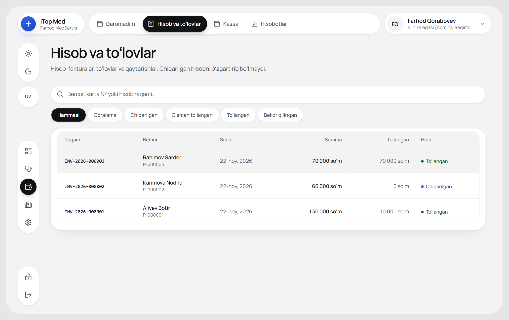
Hisob va to'lovlar: har bir hisob, holati va qarzi
Nazorat markazi — har kuni ertalab qarang: kechagi kassa farqi, qarzlar, imzolanmagan yozuvlar.
Qaytarish: xizmat ko'rsatilmasa — Kassa hisobni ochib, to'lovni sababi bilan qaytaradi.
Hisobotlar — tanlangan davr (7, 30, 90 kun yoki o'z sanalaringiz) bo'yicha.
11. Bemorlar, bemor kartasi va Excel
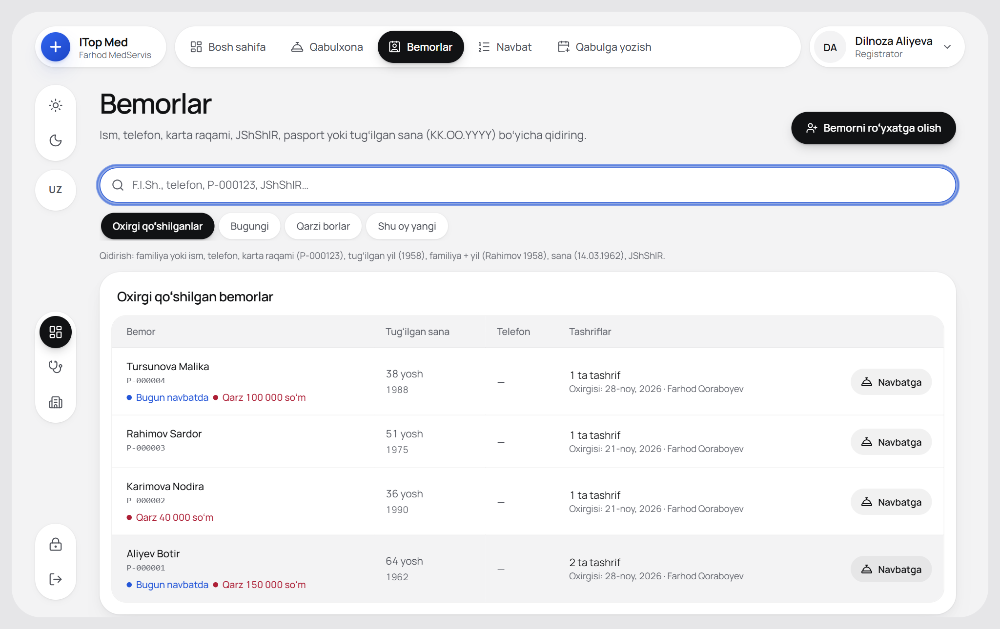
Bemorlar: qidiruv, tezkor ro'yxatlar, yoshi, tashriflar, oxirgi tashrif, bugun navbatda / qarz belgilari, "Navbatga" tugmasi
Tezkor ro'yxatlar:Oxirgi qo'shilganlar, Bugungi (bugun kelgan va kelayotganlar), Qarzi borlar, Shu oy yangi.
Har qatorda: yoshi va tug'ilgan sanasi, telefon, tashriflar soni, oxirgi tashrif (sana · shifokor), keyingi yozilgan qabul; Bugun navbatda va Qarz belgilari.
Navbatga — Qabulxona shu bemor bilan ochiladi; Tibbiy karta — faqat shifokorga.
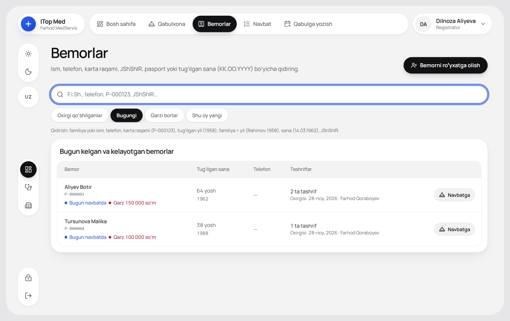
"Bugungi" ro'yxat
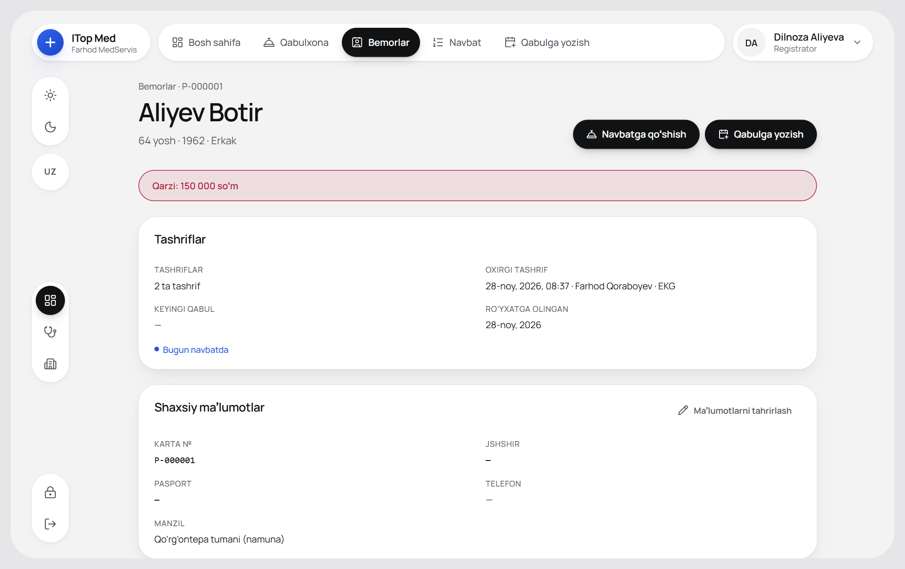
Bemor kartasi: yoshi, Tashriflar (soni, oxirgi, keyingi qabul), shaxsiy ma'lumotlar, "Navbatga qo'shish"
Shifokor uchun: tibbiy karta
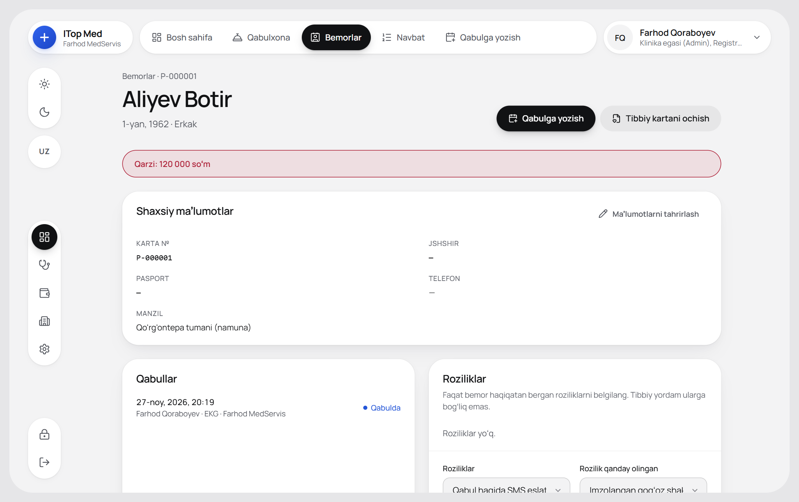
Bemor kartasi: barcha qabullar, tashxislar, retseptlar, UTT/EXO natijalari, bosim tarixi
Bemorlar → qidiring (familiya, telefon, karta raqami) → bemorni oching.
Excel tugmasi — bitta bemorning hamma ma'lumoti bitta faylda.
Sozlamalar → "Barcha bemorlarni Excel'da yuklab olish (ZIP)" — butun baza.
Videoda: bemorni qidirib, kartasini oching, oldingi qabullarni ko'rsating. 1–2 daqiqa.
12. Sinov bemorlarini tozalash
Faqat egasi Sinab ko'rish yoki video uchun kiritilgan namuna bemorlarni haqiqiy ish boshlanishidan oldin o'chiring. (Farhod MedServis'da ishga tushirishdan oldin bir marta tozalangan.)
Maydonga klinika manzilini aynan yozing: farhod-medservis.
Barcha bemorlarni o'chirish → "Tozalandi: … ta bemor" xabari chiqadi.
O'chadi
Barcha bemorlar, navbat, qabullar, ko'rik yozuvlari, tashxislar, retseptlar, UTT/EXO natijalari, hisoblar, to'lovlar, kassa smenalari. Navbat raqami yana 1 dan boshlanadi.
Qoladi
Xodimlar, xizmatlar va narxlar, shablonlar, jadval, sozlamalar, blank va logotip.
Qaytarib bo'lmaydi. Haqiqiy bemorlar kiritilgandan keyin bu tugmadan foydalanmang. Qabulxona va Kassa hisobida bu tugma umuman ko'rinmaydi.
13. Har kungi qisqa tartib
Qabulxona
Kirish (o'z logini).
Har bemor: qidirish / yangi → xizmatlar → bosim, vazn → shifokor → Navbatga qo'shish → talon.
"Kassaga to'lab kiring" deb yo'naltirish.
Yakunlangan qabul hujjatini chop etib berish.
Kun oxiri: Chiqish.
Kassa
Kirish → Kassa: smenani ochish.
Kassa: to'lov → bemor → Hammasi / Aralash / Bir qismi → To'lash → chek.
Qarzi bor bemor kelsa — qidirib to'lash.
Kun oxiri: pulni sanab smenani yopish → Chiqish.
Shifokor (Farhod aka)
Bugungi bemorlarim → Keyingi bemor.
Qabulni boshlash → shablon → yozish → Imzolash.
Tashxis, retsept, kerak bo'lsa EKG / EXO / UTT; qo'shimcha xizmat → Kassaga.
Hujjat → Qabulni yakunlash. Kechqurun — Nazorat markazi.
14. Muammolar va yechimlar
Muammo
Yechim
Kira olmayapti
Login va parolni tekshiring (katta-kichik harf). Qabulxona yoki Kassa parolini Farhod aka Xodimlar sahifasida yangilaydi. Ko'p marta xato yozilsa, 15 daqiqa kuting.
Qabulxonada "Xizmatlar" yoki "O'lchovlar" yo'q
Rollar va huquqlar → Registrator: "Xizmatlarni hisobga qo'shish" va "Hayotiy ko'rsatkichlarni kiritish" belgilangan bo'lsin (4.2-bo'lim).
Bemor Kassa ro'yxatida yo'q
Unda to'lanmagan xizmat yo'q (hammasi to'langan) yoki xizmat belgilanmagan. Qidiruvdan F.I.Sh. bilan toping.
Kassada naqd pul qabul qilinmayapti
Smena ochilmagan: Kassa → Smenani ochish.
Bemor shifokor ro'yxatida yo'q
Qabulxonada to'g'ri shifokor tanlanganini tekshiring; sahifani yangilang (F5).
Xizmat qabulxonada ko'rinmaydi
Xizmatlar sahifasida narxi qo'yilganini va arxivda emasligini tekshiring.
Hisobni chiqarib bo'lmayapti
Kamida bitta narxli xizmat qo'shilishi kerak.
Imzolangan yozuvda xato
"Qo'shimcha kiritish" — sababini yozib to'g'rilang (imzolangan matn o'chirilmaydi).
Chop etishda varaq noto'g'ri
Chop etish oynasida printerni tanlang: talon/chek — chek printeri, hujjat — A4. "Sarlavha va pastki qism" belgisini o'chiring.
Internet uzildi
Sayt ishlamaydi; internet qaytgach hammasi joyida — ma'lumot serverda, har kuni zaxira nusxa olinadi.
15. Barcha bo'limlar birma-bir
Dasturdagi har bir bo'lim: nima uchun kerak, kim ishlatadi va qanday ko'rinadi. Chap ustundagi belgilar bo'limlar guruhini almashtiradi (Bosh sahifa, Shifokor, Pul, Klinika, Sozlamalar), yuqoridagi menyu — guruh ichidagi sahifalarni. Har kim faqat o'z huquqidagi bo'limlarni ko'radi.
Bosh sahifa
Kim uchun: Hamma
Bugungi qabullar, tushum, qarz, 14 kunlik grafik va bugungi ish vaqti. Ishni shu yerdan boshlaysiz.
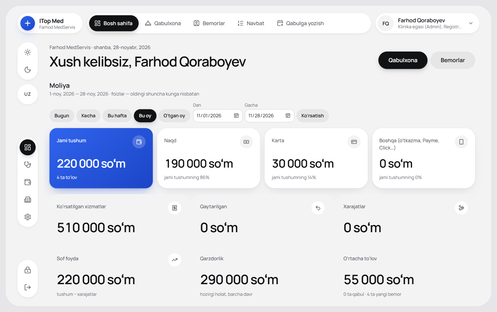
Qabulxona
Kim uchun: Qabulxona, egasi
Bemorni topish yoki yozish, xizmatlar, o'lchovlar, shifokor va navbat raqami — bitta sahifada (5-bo'lim).
Bemorlar
Kim uchun: Hamma
Bemorlar bazasi: qidiruv, tezkor ro'yxatlar (bugungi, qarzi borlar, yangi), tashriflar va qarz belgilari (11-bo'lim).
Navbat
Kim uchun: Qabulxona, egasi
Bugungi barcha qabullar: kim keldi, kim kutyapti, kim qabulda. Oldindan yozilgan bemor kelganda shu yerda «Keldi» deb belgilanadi.
Qabulga yozish
Kim uchun: Qabulxona, egasi
Bemorni boshqa kun va soatga yozish: shifokor jadvalidagi bo'sh vaqtlar ko'rsatiladi.
Bugungi bemorlarim
Kim uchun: Shifokor
Shifokorning navbati: bosim, to'lov, birinchi marta yoki qayta kelgani; «Keyingi bemor», «Qabulni boshlash» (7-bo'lim).
Dori bazasi
Kim uchun: Shifokor
Klinikaning o'z dorilari: savdo va xalqaro nomi, shakli, odatiy dozasi. Retsept yozishda dori shu bazadan qidiriladi — tez va xatosiz.
Laboratoriya
Kim uchun: Shifokor, laborant
Tahlil buyurtmalari va natijalari. Shifokor qabulda tahlil buyuradi, natija kiritilgach bemor kartasida ko'rinadi.
Dispanser
Kim uchun: Shifokor
Doimiy kuzatuvdagi bemorlar: keyingi ko'rik muddati, muddati o'tganlar qizil. Qabuldan keyingi so'rov javoblari («yomonroq» birinchi).
Mening jadvalim
Kim uchun: Shifokor
Shifokorning o'z ish kunlari va soatlari, ta'til va dam olish kunlari.
Daromadim
Kim uchun: Shifokor
Shifokor bemorlari uchun kassaga tushgan pul (bugun, hafta, oy) va klinika belgilagan ulush.
Kassa: to'lov
Kim uchun: Kassa
Bemorning hamma to'lanmagan xizmatlari bir ro'yxatda: to'liq, aralash yoki bir qismi; chek (6-bo'lim).
Kassa (smena)
Kim uchun: Kassa
Smenani ochish va yopish: boshlang'ich pul, naqd tushum, kassada bo'lishi kerak bo'lgan summa, kamomad yoki ortiqcha.
Hisob va to'lovlar
Kim uchun: Egasi, Kassa
Har bir hisob: xizmatlar, to'lovlar, qoldiq, holati; qaytarish va bekor qilish (sababi bilan).
Hisobotlar
Kim uchun: Egasi
Tanlangan davr bo'yicha tushum, to'lov usullari, ommabop xizmatlar, shifokorlar, qabullar, qarzdorlar (10-bo'lim).
Shifokorlar va jadval
Kim uchun: Egasi
Shifokor profili (mutaxassislik, kod), ish jadvali, ulush foizi.
Xizmatlar va narxlar
Kim uchun: Egasi
Narxnoma: xizmat qo'shish, narxni o'zgartirish, arxivlash. Yangi narx darhol Qabulxonada chiqadi.
Dorixona va ombor
Kim uchun: Egasi
Dori va materiallar: kirim, chiqim, qoldiq, yaroqlilik muddati.
Kadrlar
Kim uchun: Egasi
Xodimlar haqida ma'lumot: lavozim, litsenziya va sertifikat muddatlari, ta'tillar.
Xodimlar
Kim uchun: Egasi
Xodim qo'shish (login va parol), rollar, yangi parol berish, kirishni to'xtatish (4.2-bo'lim).
Nazorat markazi
Kim uchun: Egasi
Bir qarashda: bugungi qabullar va tushum, qarzlar, ochiq kassalar, smena farqlari, chegirmalar, imzolanmagan yozuvlar, xavfsizlik.
Klinika sozlamalari
Kim uchun: Egasi
Klinika ma'lumotlari, hujjat blanki va logotip, kutish zali ekrani (televizor), Excel'ga yuklab olish, nazorat qoidalari, bo'limlarni yoqish/o'chirish.
Shablonlar
Kim uchun: Egasi, shifokor
Ko'rik bayonnomasi shablonlari, chop etiladigan hujjatlar (Kardiolog ko'ruvi, ma'lumotnoma), UTT/EXO shablonlari, retsept sxemalari.
Bo'limlar va xonalar
Kim uchun: Egasi
Kabinetlar va xonalar: navbatda va televizor ekranida bemorga qaysi xonaga kirish aytiladi.
Filiallar
Kim uchun: Egasi
Klinikaning manzillari. Farhod MedServis'da bitta filial.
Rollar va huquqlar
Kim uchun: Egasi
Har bir rol nimani ko'rishi va qilishi mumkin. Registratorga xizmatlar va o'lchovlar huquqi berilgan (4.2-bo'lim).
Integratsiyalar
Kim uchun: Egasi
Nima ulangan va nima hali yo'q: Telegram bot, SMS, Payme, Click, Uzum. Halol holat — rejalashtirilganlari shunday yozilgan.
Qo'llab-quvvatlash kirishi
Kim uchun: Egasi
ITop Med yordamchisi faqat sizning ruxsatingiz bilan va vaqtinchalik kira oladi; har bir kirish jurnalga yoziladi.
Faoliyat jurnali
Kim uchun: Egasi
Kim, qachon, nima qildi: kirishlar, to'lovlar, o'zgarishlar. O'chirib yoki o'zgartirib bo'lmaydi.
16. Video ssenariysi
#
Qism
Kim nomidan
Nima ko'rsatiladi
Vaqt
1
Tanishuv
—
Dastur nima, kim nima qiladi (1-bo'lim sxemasi)
1 daq
2
Kirish
Egasi
Login, til, qorong'i rejim, ilovani o'rnatish, qulflash, chiqish
2 daq
3
Bosh sahifa
Egasi
Tushum, qarz, grafik, bo'limlar menyusi
1 daq
4
Sozlash
Egasi
Blank, Qabulxona va Kassa xodimlari, Registrator roli, narxlar, shablonlar, jadval
5 daq
5
Bemorni yozish
Qabulxona
Yangi bemor, xizmatlar, o'lchovlar, talon; Kassaga yo'naltirish
3 daq
6
To'lov
Kassa
Smena, Kassa: to'lov, to'liq / aralash / bir qismi, chek, smenani yopish
4 daq
7
Navbat va telefon
Qabulxona
Navbat sahifasi, qabulga yozish, telefonda ishlash
2 daq
8
Qabul
Shifokor
Bugungi bemorlarim, keyingi bemor, qabulni boshlash, 6 qadam
2 daq
9
Ko'rik yozuvi
Shifokor
Shablon, tezkor tanlash, imzolash, tashxis, retsept, qo'shimcha xizmat
5 daq
10
UTT / EXO
Shifokor
Shablon, me'yorni to'ldirish, qizil qiymat, xulosa, chop etish